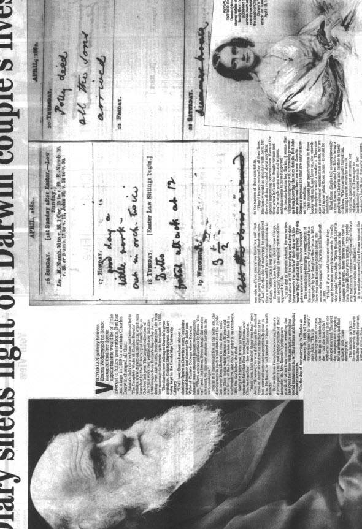

第14章
结论和总结
·Concluding Remarks and Summary·
我们已经知道，表情本身，或者像有时被人所称做的情绪的语言（language of emotions），的确对于人类的安宁是重要的。如果我们尽可能去理解各种各样在我们周围的人的面部上时时刻刻可以看到的表情的来源或者起源，那么这就应该会使我们感到很大兴趣，更不必谈到去注意家畜的表情了。根据这几个理由，我们可以得出结论说，我们这本书的主题的哲学见解，过去曾经被人认为很值得大家加以注意，有几个卓越的观察者已经作了这种注意；因此，今后它仍旧值得使人注意，特别是应该得到每个有才能的生理学家的注意。

Cambridge Evening News 上刊登的关于达尔文夫妇的报道。
三个决定主要表情动作的重要原理——表情动作的遗传——意志和意图在获得各种不同的表情方面所起的作用——表情的本能的认识——我们的主题对于人种的统一问题的关系——人类祖先接连获得各种不同的表情的经过——表情的重要性——结论
现在我已经尽了自己的最大努力来描写人类和少数比较低等的动物的主要表情动作。我已经根据第一章里所提出的三个原理，来尝试说明这些动作的起源或者发展。第一原理就是：有些动作在满足某种欲望方面有用，或者在减轻某种感觉方面有用；如果它们时常重现出来，那么它们就会变成习惯性动作，而且以后就不论这些动作有没有什么用处，只要每次在我们发生同样的欲望或者感觉的时候，即使这种欲望或者感觉的程度很微弱，这些动作也就会发生出来。
我们的第二原理就是对立原理。在反对的冲动下有意进行反对动作的习惯，由于我们一生的实行而在我们身上牢固地确立起来。因此，如果依照我们的第一原理，我们在一定的精神状态下，经常不断地去实行一定的动作，那么在相反的精神状态的激奋下，我们就会发生一种强烈的不随意的倾向，去实行直接相反的动作，不论它们有没有用处，都是这样。
我们的第三原理就是：兴奋的神经系统不依存于意志，而且大部分不依存于习惯，对身体起有直接的作用。经验表明，每次在脑脊髓系统被兴奋起来的时候，神经力量就发生和释放出来。这种神经力量所经由的方向，必须由那些联系彼此间的神经细胞和身体的各个不同部分之间的路线来决定。可是，习惯也对这种方向起有很大的影响；这是因为神经力量容易通过惯熟的通路。
可以认为，大怒的人的狂暴而无意义的动作的发生原因，一部分是由于神经力量没有一定方向的流动，另一部分则是在于习惯的影响，因为可以看出，这些动作时常模糊地表现出殴打的动作来。因此，我们可以把这些动作归到我们的第一原理所包含的姿态里面去；例如一个愤激的人，虽然并没有任何意图要去真正进攻对方，但是也会无意识地使自己采取一种适于打击对方的姿态。我们也在一切所谓激奋的情绪和感觉方面看出习惯的影响来，因为这些情绪和感觉是由于惯常引起强盛活动而采取这种特性的，这种活动就间接地对呼吸和血液循环系统发生影响，而这个系统则又对脑子发生反应。甚至每次在我们轻微地感受到这些情绪或者感觉的时候，虽然当时它们还没有引起任何努力的可能，但是由于习惯和联合的力量影响，我们的全身组织仍旧受到损害。还有一些所谓压抑的情绪和感觉；因为它们除了开头发生激烈的动作，例如在极度苦痛、恐惧和悲哀的情形方面那样，就不会惯常引起强烈动作，而且最后会引起精力完全疲累，所以它们是压抑的；因此，这些情绪和感觉主要就表现出消极的征象和虚脱。还有一些情绪，例如恋情；它们起初并不引起任何一种动作，因此也不显露出任何显著的外表征象来。实际上，恋情如果还处在愉快感觉的范围里，那么就会激发起通常的愉快表征来。
从另一方面看来，很多由于神经系统的兴奋而发生的后果，显然是和神经力量沿着那些由于以前所完成的意志的努力而成为惯熟的通路而传播的情形完全没有关系。现在还不能够去说明有些时常表明出受到影响的人的精神状态的后果；例如：由于极度恐怖或者悲哀而发生毛发颜色变化，由于恐惧而发生冷汗和肌肉颤抖，肠管的分泌作用遭到破坏，有些腺的活动停止。
不管在我们现在所研讨的主题里还有很多不明白的地方，但是我们仍旧可以盼望到，今后根据上面所提出的三个原理或者其他和它们类似的原理，去使一切表情动作都获得相当的说明。
所有一切种类的动作，如果经常不变地和某种精神状态同时发生，那么立刻就可以被承认是表情动作。身体上的某个部分的动作，例如狗的尾巴摇动、人的双肩耸起、头发直竖、出汗、微血管血液循环的状态发生变化、呼吸困难、口声或者其他发声器官的使用，都归属于表情动作。甚至昆虫也用它们的唧唧声来表明愤怒、恐怖、嫉妒和爱情。在人类方面，呼吸器官不仅在作为直接的表情手段方面有特别重要的意义，而且也在作为间接的表情手段方面有更加高度重要的意义。
在我们现在所研讨的主题里，有少数几点，要比异常复杂的一连串引起一定的表情动作的事件更加有兴趣。我们可以举出一个由于悲哀或者忧虑而受苦的人的眉毛倾斜情形来作为例子。在婴孩因为饥饿或者苦痛而高声尖叫的时候，他的血液循环就受到影响，双眼因此具有充血的倾向；结果，眼睛周围的肌肉就强烈收缩起来，以便保护双眼；这种动作在很多世代里被坚强地固定下来，并且遗传下去；可是随着年龄的增加和文化程度的提高，尖叫的习惯就有一部分被抑制下去，但是每次在我们感到轻微痛苦的时候，眼睛周围的肌肉仍旧有收缩的倾向；在这些肌肉当中，鼻三棱肌要比其他的肌肉较少受到意志的支配；只有靠了额肌的中央筋膜的收缩才能阻止鼻三棱肌的收缩；额肌的中央筋膜把双眉的内端向上提起，使前额起有特殊样子的皱纹；我们就可以辨认出这是悲哀或者忧虑的表情。像刚才所讲到的那些轻微的动作，或者很难认清的嘴角向下牵引，就是过去显著的、可以理解的动作的最后残存物或者痕迹。这些动作对我们说来是具有表情上的重大意义，正像普通的痕迹器官对自然科学家说来是具有着有机体分类和发生上的重大意义一样。
人类和比较低等的动物所表现的主要表情动作，现在已经成为天生的，就是遗传的动作；也就是说，它们并不是个体在出生以后学习而获得的；这种说法已经被大家所公认。当中有几种动作，绝不是学习和模仿所能获得的，因为它们自从我们一生的最早几天起直到老死为止，都完全不受到我们的支配；例如，在脸红的时候，皮肤的动脉宽弛；在愤怒的时候，心脏活动增强。我们可以看到，只有两三岁的小孩，或者甚至是生来瞎眼的人，也会由于羞惭而脸红起来；年纪很小的婴孩的裸出的头皮，会由于激情而发红。婴孩在刚才出生以后就会由于疼痛而尖叫起来，当时他们的一切面貌变化，就具有以后年岁里所出现的同样的形态。单单这些事实，就已经足够表明出，在我们最重要的表情当中，有很多表情并不是后来获得的；可是，值得注意的是，有几种确实是天生的表情，但是在它们被充分或者完全实行以前，还需要由个体来加以练习；例如哭泣和声笑就是这样。我们的多数表情动作能够遗传的情形，正就说明了我从勃莱尔牧师那里听到的事实，就是：那些生来瞎眼的人所表达出来的表情动作，也和明眼人所赋有的表情动作一样良好。因此，我们可以理解到一个事实：种族极不相同的幼年和年老的人和动物，双方都能够用同样的动作表现出同样的精神状态来。
我们已经很熟悉幼年和老年动物以同样方式来表现它们的感情这种事实，因此我们就很难辨认出下面的事实有多么显著不同：年幼的小狗正像老狗一样，在愉快的时候摇动着尾巴，而在假装怒恨的时候，则把双耳贴近头部，并且露出犬齿来；或者是小猫也像老猫一样，在惊恐和愤怒时候就会把自己的小背部向上弓起，并且把毛发直竖起来。可是，如果我们转过来观察自己所表现的较不普遍的姿态，这些姿态被我们惯常认为是人为的或者沿传的姿态，例如双肩耸起是表示软弱无力的姿态，或者双臂举起而且摊开双手和展开五指的动作是惊奇的姿态，那么我们在发现它们是天生的姿态时候，大概也会大吃一惊。我们可以根据年纪极小的孩子、生来瞎眼的人和远不相同的人种都能够表现出这些姿态和其他几种姿态来这种事实，来推断出它们是遗传而来的。我们也应当记住，大家知道有些和一定精神状态联合的新获得的极其特殊的癖性，先在某些个体当中发生出来，后来就被遗传给子代，有时达到一个世代以上。
另外有几种姿态，在我们看来好像是很自然的，因此我们就容易把它们当做天生的；实际上它们也好像语言的字句一样，显然是学习而获得的。在祈祷的时候，举手合掌和双眼向上转动的动作，显然就属于这种情形。作为恋爱的标记的接吻，也属于这方面；可是，一种动作如果处在某种和所爱的人接触而发生的愉快范围里，那么就属于天生的。关于作为肯定和否定表征的点头和摇头的遗传方面的证据，还有使人可疑的地方，因为这些表征不是普遍存在的，但是显得很普通，因此已经被很多种族的一切个人所独立地获得了。
现在我们来考察意志和意识在各种不同的表情动作的发展方面起有多大的作用。尽我所能够判断的说来，只有少数表情动作，例如刚才所讲到的动作，是被每个人所学习而获得的，就是被人在一生的早年期间里为了某种一定目的或者模仿别人而有意识地和志愿地实行，后来就变成习惯的动作。我们已经知道，极多的表情动作，而且是所有一切最重要的表情动作，都是天生的或者遗传而来的；我们不能认为它们依存于个人的意识。虽然这样，一切被包括在我们的第一原理范围里的表情动作，最初都是被个人为了一定目的而有意识地实行的；就是为了要逃避某种危险，要解除某种痛苦，或者要满足某种欲望。例如，未必可以去怀疑，有些用牙齿作斗争的动物，在怒恨的时候，获得了把双耳向后牵伸和贴近头部的习惯；这是因为它们的祖先过去为了保护自己的双耳以免被敌方所撕咬去，而已经有意地采取了这种方式的动作；要知道，不用牙齿相斗的动物就不会采取这种动作来表明自己的怒恨情绪。我们可以作出极其近于真实情形的结论说，我们自己在平和的哭喊（就是不发出任何高大声音来的哭喊）时候，获得了使眼睛周围肌肉收缩的习惯。这是因为在我们的祖先（尤其是在婴孩时期里）作着尖叫动作的时候，他们的眼球就感受到一种不舒适的感觉，所以采取了这种动作。还有几种显著的表情动作，是由于努力抑制或者防止其他的表情动作的结果而发生的；例如：眉毛倾斜和嘴角向下牵引，是由于努力防止一阵就要到来的尖叫发作、或者抑制已经发生的尖叫而发生的。在这种情形里就可以明白，意识和意志起初一定对这些动作起过作用；可是，在这种情形里和在其他类似的情形里，正像在我们实行最普通的有意的动作时候那样，我们还很少意识到究竟哪一些肌肉参加作用。
至于说到那些由于对立原理而发生的表情动作方面，那么可以明白，意志曾经在当时对表情动作的发展方面起有作用，不过是遥远的和间接的作用。关于我们的第三原理所包括的表情动作方面，也是这样；因为这些动作受到那种容易通过惯熟的通路的神经力量的影响，所以它们的发展曾经被以前多次意志的努力所决定。这些间接由于意志的努力而发生的效果，往往由于习惯和联合的力量，而和脑脊髓系统的兴奋所直接产生的效果，互相复杂地结合起来。显然，这个说法也可以适用于心脏活动在任何强烈情绪的影响之下加强起来方面。当一只动物为了要使敌方感到恐惧而把毛发直竖起来，采取可怕的姿态并且发出凶恶的叫声来的时候，我们就可以看出它的本来有意的动作和不随意的动作互相奇妙地结合在一起。可是，说不定意志的神秘力量甚至也会对真正不随意的动作（例如毛发直竖的动作）起有作用。
有几种表情动作，也可以像上面所讲到的癖性那样，和一定的精神状态联合起来而自然发生出来，以后则被遗传下去。可是，我还没有知道任何一个可能证实这个见解的证据。
同一种族的成员之间靠了语言而进行的交际能力，在人类的发展方面起了头等重要的作用；而面部和身体的表情动作就对语言作了重要的帮助。当我们和任何一个遮掩自己面部的人谈论到一个重大问题时候，我们立刻就可以相信这个说法。虽然这样，据我所能够发现的说来，还没有根据可以认为，任何一种肌肉会专门为了表情的缘故而发达起来，或者甚至发生变化。那些用来发出各种各样表情声音来的口声的和其他发声的器官，似乎是有几分例外；可是，我曾经在另外地方尝试去表明，这些器官起初是为了两性之间彼此互相呼唤或者诱惑的目的而发达起来的。我们也不能找出根据来假定说，任何一种现在作为表情手段的、能够遗传的动作，例如有几种被聋哑的人所使用的姿态和手势语，起初是为了这种特殊目的而被随意地和有意识地实行的，相反地说来，各种真正的或者遗传的表情动作，显然具有某种自然的和不依存于特殊目的的起源。可是，这些动作在一次被获得以后，就可以被随意地和有意识地使用，作为交际手段。甚至婴孩也是这样；如果我们仔细地去观察他们，那么可以看到，婴孩在极小的年龄时候就会发现自己的尖叫能够减轻痛苦，因此他们也就立刻随意地实行它。我们时常可以看到，有人能够为了表示惊奇而有意把双眉举起，或者为了表示假装的满意和默认而有意发出微笑来。还有人时常想要把一定的姿态变得显著或者显明，因此就把自己的双臂张开，把五指宽广地分开，高举到头部以上，来表示他的吃惊；或者把双眉耸起到双耳处，来表示他不能够或者将不去做某种事情。如果他们有意和多次重复地去实行这些动作，那么这种实行的倾向就会加强或者增加起来，而它的效果就会遗传下去。
说不定我们也值得去考察一下，究竟那些最初只是被一个人或者少数人使用来表示一定的精神状态的动作，是不是有时并不会扩展到其他的人方面去，而且也不会由于有意的或者无意的模仿而最后成为普遍的动作。的确，在人类方面存在着一种和有意的意志毫无关系的、强烈的模仿倾向。在某些脑病方面，特别是在脑子初期发炎软化的时候，就特别显著地表现出这种模仿倾向来，因此它又被叫做“反响症状”（echo sign）。患生这些病症的人，就会去模仿周围的人所做出来的毫无意义的姿态，去模仿他们附近所发出的每句话，甚至是外国话，却并不懂得它们的意义。 (1) 在动物方面也有这种情形，例如胡狼和狼曾经在兽笼里学习模仿狗的吠叫。狗的吠叫是用来表示各种不同的情绪和欲望的；而且值得使人注意的是，这种动物在被驯养以后才获得吠叫的特性，并且不同的狗的品种遗传到程度不同的吠叫特性；可是我们还不知道，吠叫起初是怎样被狗学习到的；可是，说不定我们还不至于去怀疑说，由于狗长期在和人类这种善于饶舌的动物作着密切的共同生活，所以模仿也会对吠叫的获得方面起有某些作用吧？
我时常在上面的叙述里和在圣书各处，为了要确当地应用“意志”、“意识”和“意图”这一类名词的问题，而感到有很大的困难。有些起初是有意的动作，立刻就会变成习惯的动作，最后则成为遗传的动作，于是也就可以甚至反对意志而被实行。虽然这些动作时常表现出精神状态来，但是这绝不是起初的目的，也不是预料的后果。甚至像“某些动作用来作表情手段”这几个字，也容易会使人发生误解，因为这几个字的意义含有着动作的最初的目的或者对象。可是，这种意义的情形似乎很少发生，或者从来不会发生；要知道，这些动作起初或者是具有某种直接的用处，或者就是感觉中枢的兴奋状态的间接效果。婴孩为了表示要吃东西，而可以有意地或者本能地发出尖叫来；可是，他并没有一种愿望或者意图，要把自己的面貌装扮成这样明显地表示可怜的特殊样子来。在人类所表示的最特有的表情当中，有几种表情是由于尖叫动作而发生；在前面已经说明过这一点。
虽然大家都承认，我们的多数表情动作是天生的或者本能的，但是究竟我们有没有一种认识它们的本能的能力，这却是另外一个问题。虽然一般都假定我们具有这种能力，但是列莫因先生曾经强烈反对这种假定。 (2) 有一个细心的观察者肯定说，猿类不仅对于主人说话的音调，而且也对于他们的面部表情，都会很快地辨认出来。 (3) 狗也清楚地辨别出主人在爱抚时候和恐吓时候的姿态或者音调双方的差异；显然它们也辨认得出一种表示同情的声调来。可是，我因为已经作了多次对狗的试验，所以就尽可能来指出说，它们除了懂得微笑或者声笑以外，就不再懂得任何有关面貌方面的表情动作；它们至少有几次似乎辨认得出微笑或者声笑来。猿类和狗，大概由于把我们对它们的苛刻或者亲切的对待去和我们的动作联合起来，而获得了这种有限的辨认能力；可以知道，这种能力确实不是本能的。显然无疑，小孩也像动物学习人类的表情动作的情形一样，会立刻去学习年纪较大的人的表情动作。不但这样，婴孩在哭喊或者声笑的时候，一般都会知道自己在干些什么事情和感到什么情绪，因此，极微小的理智上的努力，就可以使他明白别人的哭喊和声笑是什么意义。可是，要知道问题就在于：人类的小孩是不是单单由于联合和理智的能力而得的经验，来获得他们辨认表情的能力的？
因为多数表情动作一定是逐渐地被获得的，后来才转变成为本能的动作，所以我们显然具有某种程度的先天的几率来假定说，表情动作的认识也同样可以成为本能的认识。相信这种假定，至少要比承认下面两点碰到较小的困难；这两点就是：第一，雌性四足兽在第一次产子以后，就能够辨出它的儿子的痛苦叫喊；第二，很多动物本能地辨认得出自己的敌人，并且对它们发生恐惧；我们绝没有理由去怀疑这两种说法。可是，要去证明人类的小孩会本能地辨认得出任何表情这件事，却有极大的困难。我曾经观察自己的初生婴孩，打算去解决这个问题；这个婴孩在和其他小孩同居的时候，还绝不会学习到任何事情；同时我确信，在这小小的年纪，而且还不能靠了经验来学习任何事情的时候，他已经理解到微笑，由于看到微笑而发生愉快，同时用自己的微笑来应答它。当这个婴孩的年纪大约有4个月的时候，我在他面前发出各种奇怪的嘈声和作出奇特的怪相来，并且还尝试装成怒恨的样子；可是，嘈声如果不太高的话，那么也好像怪相一样，全都被他看做是良好的玩具；我以为这种情形就在于当时在发出嘈声以前或者同时，还有微笑显现出来。他的年纪在5个月的时候，显然已经理解到同情的表情和声调。当他6个月零几天的时候，他的保姆假装哭喊的样子，于是我就看到，婴孩的面部立刻采取忧郁的表情，同时嘴角向下压抑得很厉害；因为这个婴孩还很少看到其他小孩哭喊，并且从来没有看到成年人哭喊过，所以我应当怀疑究竟他会不会在这样小的年纪，去推断这个问题。因此，我以为，正就是先天的感情在暗示这个婴孩道，他的保姆假装的哭喊就表示悲哀；由于同情的本能，这就激发起他自己的悲哀来。 (4)
列莫因先生论断说，如果人类具有天生的辨认表情的能力，那么著作家和艺术家在叙述和描写各种特殊精神状态的特有表征时候，应当不再遇到像实际上大家知道的情形那样的困难。可是，我以为他的论断并不正确。我们可以确实看到，人类或者动物的表情发生毫无错失的变化，但是根据我从经验上所知道的，现在还不可能去分析变化的性质。在杜庆所提供的两张同一个老年人的照片（照相图版III，图5和图6）里，差不多每个人都辨认得出，一张照片表明真正的微笑，而另一张照片表明虚假的微笑；但是我发现，要去决定全部差异在于什么，就显得非常困难。有一个奇妙的事实使我感到惊奇，就是：我们一下子就可以辨认出很多种类的表情，而不用我们去作任何有意识的分析过程。我以为，决没有人能够清楚地描写出愠怒或者狡猾的表情来；可是，有很多观察者都得出一致的结论说，在各种不同的人种方面，都能够辨认出这些表情来。我曾经把杜庆博士所摄的一张眉毛倾斜的青年人的照片（照相图版II，图2）交给人家看；差不多所有看到它的人立刻就宣布说，它表示悲哀或者某种类似的表情；可是，恐怕在这些人当中没有一个人，或者在一千人当中没有一个人，能够预先说出任何有关双眉倾斜而且内端起皱方面的、或者有关前额出现长方形皱纹方面的精确的情节来。还有很多表情，也发生同样的情形；我曾经在向别人指出应该观察这些表情的各种细节时候，就亲身体验到这方面的困难。因此，如果完全不知细节的情形并不妨碍我们确实而迅速地认识各种表情，那么我就不能理解到，这种不知细节的情形怎样能够被提出成为一种论据，去证明我们的知识（辨认能力）虽然模糊不明和不能确定，却并不是天生的。
我曾经努力要相当详细地表明出，人类所特有的一切主要表情是全世界都相同的。这个事实是很有趣味的，因为他能够提供出一个新的论据来，而有利于几种民族起源于单一的祖先种族的说法；这个祖先种族在还没有分开成彼此不同的人种的期间以前，已经差不多具有完备的人体构造，而且也具有大部分人类的精神。不必怀疑，这些适应于同一目的的类似的身体构造，时常由于变异和自然选择而被各种不同的种族所独立地获得；可是，这种见解还不能去说明各种不同的种族在大量不重要的细节方面具有彼此密切的类似。其次，如果我们注意到，身体构造的无数特征对于一切人种所共同具有的表情并无关系，并且再把表情动作所直接或者间接依存的很多条件（有些条件极其重要，而很多条件则是很少具有意义的）都增添到它们里面去，那么我认为，极不可能用彼此无关的方法，去获得这种在身体构造上的很大的类似情形，或者更加正确的说是构造上的相同情形。可是，如果以为人种起源于几个原来彼此不同的种族，那么就一定会发生这种情形了。极其近于真实的说法，就是：有很多在各种不同的种族方面的极其相似的特征，是由于单一的、已经具有人类特征的祖先类型方面的遗传而来的。
有一个问题，虽然说不定有人会认为去思索它是无益的，但是也很有趣味；这就是：在远古的时期，我们的祖先究竟从怎样早的时代开始接连地获得现在人类所表示的各种不同的表情动作。下面的一些论点，至少可以用来使我们回想到本书里所讨论到的主要原理。我们可以确信地认为，我们的祖先在还没有被称做人类的资格以前很久，就已经实际使用声笑来作为愉快或者喜悦的表征，因为有很多种类的猿在愉快的时候，就发出一种显然和我们的声笑相似的反复的声音来，同时它们的双颚或者双唇也时常上下振动，而嘴角则向后和向上牵引，双颊起皱纹，甚至双眼也发亮起来。
我们也可以推断说，在极其遥远的时代，人类已经差不多像现在一样表现出恐惧来；就是在恐惧的时候，表现出身体颤抖、毛发直竖、冒出冷汗、脸色苍白、双眼大张、多数肌肉宽弛，而且全身向下蹲缩或者呆住不动。
苦恼如果很强烈，那么在一开头的时候就应该引起受苦者发出尖叫或者呻吟来，同时身体痉挛和牙齿互相磨动。可是，在我们的祖先的血液循环器官、呼吸器官和眼睛周围的肌肉还没有获得我们现在的构造以前，还不能够表现出那些和尖叫与哭喊同时发生的面貌的高度表情动作来。显然流泪是借助于反射作用而起源于眼睑的痉挛性收缩，可能眼球在发出尖叫时候过分充血。因此，哭泣大概是在人类发展史的比较晚近的时代发生的；这个结论也符合于下面的事实，就是：人类的最接近的亲属——类人猿——不会哭泣。可是，我们在解决这个问题的时候，应当稍微小心些，因为有几种和人类没有密切的亲缘关系的猿会哭泣，所以这种习惯可能很早就在那个产生出人类来的类群的旁系里被发展起来。在我们的早期的祖先还没有获得努力抑制自己的尖叫的习惯以前，当发生悲哀或者忧虑的苦恼时候，绝不会把双眉倾斜，或者使嘴角向下牵引。因此，悲哀和忧虑的表情是人类所卓绝地专有的。
在很早的古代，人类就用威吓或者狂暴的姿态、皮肤发红和双眼发光来表示大怒，但是并不用皱眉来表示它。要知道，皱眉的习惯显然是由于下面的原因而获得的：主要的原因是每次在婴孩发生疼痛、愤怒或者痛苦而且因此就要发出尖叫的时候，眼轮匝肌就是第一种在眼睛周围收缩的肌肉；部分的原因则是皱眉可以用来作为一种在困难的专心注视时候的遮阴物。很可能在人类还没有采取完全直立的位置以前，这种遮荫的动作还没有变成习惯的动作，因为猿类在眩目的光照下并不皱眉。人类的很早的祖先在大怒的时候，大概要比现在的人更加自由地露出牙齿来；甚至是一个人大怒得完全发狂，像精神病患者那样，也不及这些祖先的露齿自由。我们也可以差不多肯定说，他们在愠怒或者失望的时候，一定比我们的小孩，或者甚至比现存的野蛮种族的小孩，更加强烈地突出双唇来。
人类的很早的祖先在发生愤慨或者中等程度的愤怒时候，如果还没有获得人类的普通步态和直立姿态，那么绝不会把头部挺直，扩张胸部，耸起双肩，并且握紧拳头，而且也不会学习到用拳头或者棍棒来相斗的本领。在这个时代还没有到来以前，那种和上述姿态相反的、作为软弱无力或者忍耐的表征的耸肩姿态，绝不会得到发展。根据同样的理由，在那时候，也绝不会用举起双臂、张开双手和分开五指的姿态来表示吃惊。根据猿的动作来判断，绝不会用把嘴大张的姿态来表示吃惊；可是，当时双眼应该会张开，而双眉则向上弓起。在遥远的古代，应该是用嘴的周围的动作，好像呕吐的动作一样，来表示厌恶；就是说，如果我对于这种表情的起源所提出的见解是正确的，那么就会发生这种动作；我的见解就是：人类的祖先具有那种把自己厌恶的食品从胃脏里有意地迅速吐出的能力，并且使用过这种能力。可是，轻蔑或者鄙视的最精细的表明方法，是用眼睑下垂或者把双眼和面部转向一侧，好像是不值得去瞧看那个被轻蔑的人似的；这种方法大概在很晚的时代以前，绝不可能被他们获得。
在一切的表情当中，显然脸红是人类的最特殊的特征；一切人种，或者差不多一切人种，共同具有这种表情，不管当时他们的皮肤颜色是不是发生变化总是这样。脸红是由于皮肤表面小动脉宽弛而发生，显然这种宽弛情形最初是因为我们对于自己的身体的外貌（特别是对于面部）热心注意而发生的；而习惯、遗传和神经力量容易沿着惯熟的通路流去的倾向，也促进了它的宽弛；后来，我们对于道德行为的自己注意，由于联合的力量，也引起了这种小动脉宽弛和脸红的情形。未必可以去怀疑，很多动物能够评估美丽的颜色，甚至也能够评估形态；例如，在雌雄两性的个体当中，一性的个体为了向另一性的个体表示自己的美丽而发生苦痛，正就是由于这种情形。可是，显然还不可能去假定说，任何一种动物，在它的精神能力还没有发展到一种和人类相等或者近于相等的程度以前，也会对于自己的外貌仔细考虑和发生敏感。因此，我们可以作出结论说，脸红是在人类的漫长的发展史的很晚时代里发生出来的。
从刚才所讲的和本书各处所提出的各种不同的事实里，我们可以得出结论说，如果现在我们的呼吸器官和血液循环器官的构造略微发生一些变化的话，那么我们的大多数表情也会发生惊人的变化。例如，要是那些通往头部的动脉和静脉的分布位置发生很微小的变化，那么这就可能在激烈的呼气时候阻止血液积聚到我们的眼球里去；可以观察到，在极少数的四足兽方面就发生这种情形。在这种情形里，有几种人类最特有的表情就不会被我们表现出来。要是人类靠了外鳃来呼吸水（虽然这种见解未必可能使人想象得到），不是用嘴和鼻孔呼吸空气，那么他的面貌就不会比现在的手或者四肢更加有效地表现出自己的感情来。可是，大怒和厌恶的表情，仍旧还是双唇和嘴的周围肌肉的动作，而双眼则由于血液循环的状态而变得更加明亮或者更加暗淡。如果我们的耳朵仍旧是可以移动的，那么它们的动作一定具有高度的表情，正像一切用牙齿相咬作战的动物的耳朵动作那样；我们也可以推断说，我们的早期的祖先也是这样来相斗的，因为现在我们对别人冷笑或者挑战的时候，仍旧还露出一侧的犬齿；还有在狂乱的大怒时候，就把全部牙齿显露出来。
面部和身体方面的表情动作，不管它们的起源怎样，都对我们本身的安宁有很大的影响。它们被用来作为母亲和婴孩之间的最初的交际手段；母亲用微笑来赞扬自己孩子的良好行为，因此就鼓励他走向正路，或者用皱眉来反对他的不良行为。我们容易由于别人的表情而看出他们的同情来；例如，我们的苦恼就会因此减轻，而我们的愉快则可以增加起来，于是我们相互间的好感也因此加强起来。表情动作会使我们的说话变得生动而且有力。表情动作会比说话更加正确地显示出别人的思想和意图来，因为说话有时会是虚假的。哈莱尔很早就指出说， (5) 在所谓《人相学》里含有的真理究竟有多少，显然是取决于下面的情形：各种不同的人根据自己的性癖而经常使用不同的面部肌肉；这些肌肉的发达，大概就是这样增强起来的，而面部的线条或者皱纹由于惯常收缩而因此变得更加深刻和更加显著。一种情绪如果靠了外表特征而自由表现出来，那么这就会使它更加强化。 (6) 相反地说来，如果把一切外表特征尽可能抑制下去，那么这就会使我们的情绪更加硬化。 (7) 如果一个人采取狂乱的姿态，那么这就会增强他的大怒；如果一个人不去控制恐惧的表征，那么他就会发生更大的恐惧；如果一个人被悲哀所笼罩而仍旧处在被动状态，那么这就会使他丧失恢复精神平衡的最好机会。所有这些结果，一部分是由于差不多全部情绪和它们的外部表现之间所存在的密切关系而发生，另一部分则是由于我们的努力对于心脏的直接影响，因此也对于脑子的影响而发生。甚至在我们去模仿一种情绪的时候，也会在我们的头脑里发生出一种倾向，要真的表现出这种情绪来。莎士比亚由于对人类精神活动方面有惊人的知识，而应当被认为是这方面的卓越的鉴定者；他说道：
瞧吧，这里有一个演员，
只不过是在扮演假戏，在做着热情的梦，
但是却把自己的精神高扬起来，以致达到狂想，
由于这种做法，他的脸变得完全苍白，
双眼含泪，面部带着绝望的样子，
声音断断续续，而且他的全部行动真正符合于
他的狂想的形态；这不是奇怪的事情吗？一切都是为了无中生有！
《哈姆雷特》，第二幕，第二场
我们已经知道，表情问题的研究在一定的程度上可以去证实关于人类起源于某种比较低等的动物类型的结论，并且去支持关于几个人种具有种的或者亚种的统一性的说法；可是，据我所能判断的说来，这种确证恐怕是用不到的。我们已经知道，表情本身，或者像有时被人所称做的情绪的语言（language of emotions），的确对于人类的安宁是重要的。如果我们尽可能去理解各种各样在我们周围的人的面部上时时刻刻可以看到的表情的来源或者起源，那么这就应该会使我们感到很大兴趣，更不必谈到去注意家畜的表情了。根据这几个理由，我们可以得出结论说，我们这本书的主题的哲学见解，过去曾经被人认为很值得大家加以注意，有几个卓越的观察者已经作了这种注意；因此，今后它仍旧值得使人注意，特别是应该得到每个有才能的生理学家的注意。
————————————————————
(1) 参看倍特孟（Bateman）博士在他所著的《失语症》（Aphasia ，1870年，第110页）里所举出的有趣的事实。
(2) 列莫因：《面相和讲话》，1865年，第103和118页。
(3) 伦奇尔：《巴拉圭的哺乳动物的自然史》，1830年，第55页。
(4) ［华莱士先生（《科学季刊》，Quarterly Journal of Science ，1873年1月）聪明地反驳说，保姆的面部上的奇怪表情，可能单单去吓唬婴孩，因而使他哭喊起来。
可以去比照《亚当·比德》（Adam Bede ）这本书里的铁匠查德·克拉耐奇（Chad Cranage）的表情：当这个铁匠每次在星期日洗净自己的面部时候，他的小孙女就时常把他当做陌生人而哭喊起来。］
(5) 这段话是莫罗所引用的，参看拉伐脱尔所编的《人相学文集》，1820年，第4卷，第211页。
(6) 毛兹莱在讲到表演动作的效果时候说道（《精神的生理学》，The Physiology of Mind ，1876年，第387-388页），身体的动作可以使情绪更加强化，而且更加明确。其他的著者也提出过相似的意见；例如，冯德（Wundt）：《论文集》（Essays ），1885年，第235页。勃莱德（Braid）发现，在使被催眠的人采取适当的姿态时候，他就会发生相应的激情来。
(7) 格拉希奥莱（《人相学》，1865年，第66页）肯定说，这个结论是真实可靠的。